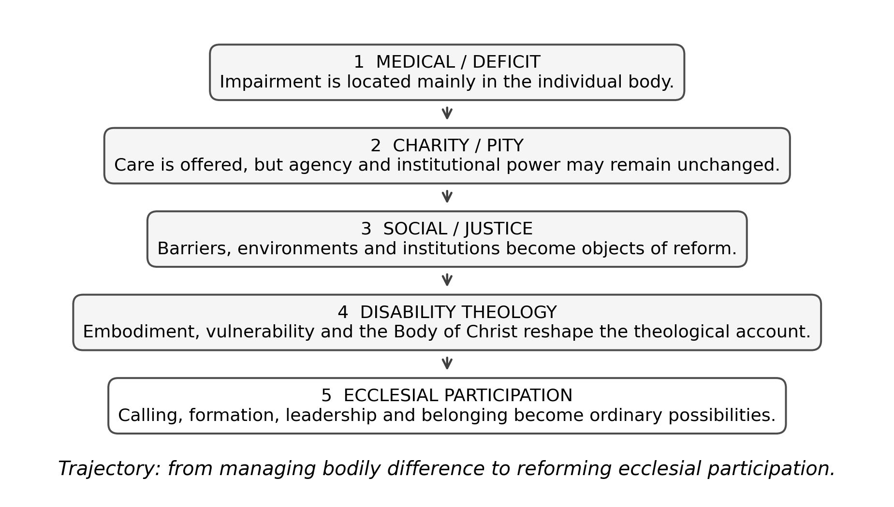

PIONEER PUBLICATION · ACCEPTED ARTICLE · REVIEW ARTICLE · SETEHEM: HUMANITIES × CHRISTIAN THEOLOGY × DISABILITY STUDIES
From Charity to Ecclesial Participation: Disability Theology, Divine Calling and Ministerial Formation in African Christianity — A Critical Review
UKULE, Peter¹*
¹Department of Christian Studies and Religious Communication, University of Abuja, Abuja, Nigeria
Corresponding author: rev.ukulepeter@gmail.com
Article | Volume/Issue | Published | ISSN | DOI |
|---|---|---|---|---|
e016 | 1(1) | August 2026 | Pending assignment | Pending registration |
DOI: Pending registration. This local production copy is not a public version of record until DOI registration and journal-release checks are complete.
Abstract
Background: African churches often combine strong doctrines of divine calling and human dignity with cultural and institutional practices that frame disability through healing, pity, dependence or exceptional accommodation.Objective: This critical narrative review synthesises disability theology, African Christian scholarship and theological-education literature to clarify the theological movement from charity-oriented inclusion toward full ecclesial participation in ministerial formation.Approach: The review synthesises sources assembled in the doctoral literature corpus, including foundational disability theology, African studies, practical theology, ecumenical statements and recent scholarship through 2025. It is a critical narrative review rather than a systematic review and makes no claim of exhaustive database coverage.Synthesis: Five themes recur: disability challenges perfectionist accounts of the human person; healing narratives can either liberate or reinforce deficit models; the body of Christ reframes apparently weaker members as indispensable; compassion without justice can preserve hierarchy; and theological education is a strategic site where cultural assumptions about ministerial embodiment are either reproduced or transformed.Conclusion: Theologically serious disability inclusion requires a shift from asking how the church can care for disabled people to asking how disabled Christians exercise agency, calling, leadership and mutual ministry within the church. Ministerial formation should evaluate gifts and essential functions, remove structural barriers and treat disability as a legitimate locus of theological knowledge rather than a pastoral exception.
Keywords: disability theology; African Christianity; divine calling; ministerial formation; ecclesial participation; charity and justice; theological education
1. Introduction
Christian communities have long cared for people with disabilities, yet care and inclusion are not the same thing. A church may organise healing services, charitable support and pastoral visitation while leaving the deeper structures of authority, formation and leadership untouched. The question raised by disability theology is therefore not whether the church is compassionate, but what kind of community its compassion creates.
This question is particularly important in African Christianity, where disability may be interpreted simultaneously through biomedical, cultural, spiritual and social lenses. Narratives of curse, spiritual attack, miraculous healing, family shame and heroic faith can coexist in the same ecclesial space. Some of these narratives mobilise support; others make disabled persons objects of explanation rather than agents of vocation. Theological education becomes a strategic location because it shapes the clergy who will interpret those narratives for congregations.
2. Review approach and scope
This article is a critical narrative review built from the scholarly corpus consolidated in Ukule’s doctoral thesis and its post-defence reference record. The corpus includes foundational disability theologians, practical theology, disability-justice scholarship, African religious studies, theological-education research and ecumenical sources. The review prioritises works that directly illuminate embodiment, divine calling, inclusion, ministerial fitness, church participation and African theological education. It does not claim the search completeness or reproducibility of a systematic review.
The synthesis asks three questions: (1) How has Christian theology conceptualised disability and embodiment? (2) What theological patterns support or obstruct the recognition of divine calling among persons with disabilities? (3) What does the literature imply for ministerial formation in African churches?
3. From deficit to participation: a theological trajectory

Figure 1. Conceptual trajectory in disability discourse from individual deficit and charity toward ecclesial participation. Source: Author’s synthesis of the reviewed literature.
3.1 Medical and deficit models
The medical model identifies impairment primarily as a problem located in the individual body. Medicine itself is not the problem; diagnosis, rehabilitation and treatment can be life-giving. The difficulty arises when a clinical description becomes a total anthropology, so that bodily difference is read as deficiency in social, vocational or spiritual capacity. Oliver’s social-model critique exposes this shift by distinguishing impairment from disability produced by inaccessible environments and institutions.
In theological contexts, deficit thinking can merge with perfectionist assumptions about priestly embodiment. Physical stamina, mobility, speech or sensory ability may be treated as self-evident indicators of leadership capacity even when the actual ministerial task can be performed differently or with accommodation. This is precisely where disability theology enters as a critique of unexamined normalcy.
3.2 Disability theology and the meaning of embodiment
Eiesland’s The Disabled God (1994) remains foundational because it places disability within Christology rather than at the margins of pastoral care. The resurrected Christ bears wounds; the body marked by injury is not excluded from divine self-revelation. The theological implication is not that disability should be romanticised, but that bodily difference cannot automatically be interpreted as absence of wholeness, vocation or divine presence.
Yong (2011) expands the argument biblically and pneumatologically. The Spirit’s gifting of the church unsettles narrow criteria of capacity because gifts are distributed across diverse bodies. Hauerwas (2004) similarly challenges communities organised around autonomy and productivity, arguing that the church’s identity is disclosed in practices of mutual dependence. These accounts make disability a theological source rather than merely an issue to which theology is later applied.
3.3 Healing narratives: liberation and risk
African Christianity frequently gives healing narratives a central place. That emphasis can affirm God’s care and mobilise communities around persons who suffer. Yet the literature also warns that a cure-centred hermeneutic can imply that disabled embodiment is spiritually incomplete until changed. John 9 is instructive: Jesus rejects the disciples’ attempt to explain blindness by personal or parental sin before addressing the man’s condition. The narrative therefore challenges both stigma and simplistic moral causation.
The critical theological task is to distinguish prayer for healing from a theology that makes healing a prerequisite for belonging or leadership. A church can pray for healing while simultaneously recognising that divine calling, sacramental participation and ministerial gifting are not suspended until bodily change occurs.
3.4 The body of Christ and indispensable difference
Pauline ecclesiology offers one of the strongest biblical resources for disability inclusion. In 1 Corinthians 12, differentiated members are not arranged on a ladder from useful to burdensome. The parts that appear weaker are described as indispensable. This shifts the question from whether the church can accommodate difference to whether the church can be itself without the gifts carried by different bodies.
Swinton’s (2012) movement from inclusion to belonging sharpens the point. Inclusion can still leave a normative centre intact and invite the disabled person into it conditionally. Belonging requires that the community itself be re-described so that the person’s presence, agency and contribution are assumed rather than exceptional.
4. African Christian contexts
4.1 Cultural and spiritual interpretations
African disability scholarship documents the persistence of interpretations involving curse, punishment, witchcraft, spiritual warfare and family shame in some settings (Ndlovu, 2016; Clausnitzer, 2021). These patterns should not be homogenised across a continent, but they matter because theological institutions do not operate outside culture. Seminary curricula must therefore teach future clergy to distinguish biblical interpretation from inherited stigma and to respond pastorally without reinforcing harmful causal narratives.
4.2 Compassion, charity and justice
McMahon-Panther and Bornman’s (2025) distinction between compassion and justice is particularly useful. Compassion can meet immediate need but preserve asymmetry: the able-bodied church helps the disabled recipient. Justice asks whether disabled persons share authority, decision-making, ministry and resources. Tagwirei (2024) advances a related African leadership argument by focusing on enabling abilities and developing differently abled Christian leadership.
A charity-only model is therefore insufficient for ministerial formation. Scholarships without accessible curricula, pastoral support without fair admissions, and prayer without leadership opportunity can all appear compassionate while leaving the institutional distribution of agency unchanged.
5. Ministerial formation as the critical institutional site
Theological education is where churches convert doctrine into professional and ecclesial standards. It decides which biblical texts frame disability, what counts as ministerial competence, how worship is practised, what bodies are anticipated by facilities, and how candidates are evaluated for placement. If disability is absent from curriculum and faculty formation, bodily normalcy can function as a hidden criterion even without explicit discriminatory rules.
Table 1. From charity-oriented responses to participatory ministerial formation.
Dimension | Charity-oriented logic | Participation-oriented logic |
|---|---|---|
Theological anthropology | Disability as need or deficit | Embodied difference within the Imago Dei and human creatureliness |
Healing | Primary expectation is bodily change | Healing may be sought without making cure a condition of belonging |
Vocation | Disabled person is recipient of ministry | Disabled person may be called, gifted and authoritative in ministry |
Accommodation | Special favour when feasible | Ordinary institutional responsibility |
Leadership | Exceptional and risky | Evaluated through gifts, essential functions and support |
Decision-making | Others decide for the disabled person | Disabled persons participate in design, discernment and governance |
5.1 Essential functions rather than bodily proxies
One of the most practical conclusions from the literature is that ministerial fitness should be framed through essential functions. A requirement should be defended by what the ministry actually demands, not by what clergy have traditionally looked like. Standing, walking unaided, seeing print or hearing without assistive technology are not self-evidently theological requirements. Where a task can be fulfilled through another method or reasonable support, bodily difference should not be treated as vocational disqualification.
5.2 Disability theology as core curriculum
Disability theology should not be confined to a pastoral-care elective. It intersects with biblical interpretation, theological anthropology, Christology, ecclesiology, ethics, liturgy, mission and practical theology. Carter (2021) and Barton (2021) illustrate how theological schools can integrate disability and ministry formation more structurally. In African seminaries, such integration should also address local cultural narratives and the legal/social context of disability rights.
6. A framework for ecclesial participation
The reviewed literature supports six principles for ministerial formation. First, dignity is not contingent on function. Second, divine calling is discerned through gifts and vocation, not bodily normalcy. Third, the church is mutually dependent rather than divided into helpers and helped. Fourth, barriers are institutional responsibilities. Fifth, disabled persons are theological knowers whose experience should shape curriculum and policy. Sixth, participation includes authority, leadership and placement, not merely presence.
Teach disability theology across the core theological curriculum, including biblical texts historically used to stigmatise or exclude.
Define ministerial essential functions transparently and review them for hidden bodily proxies.
Design admissions, learning, worship and field education around universal access, with reasonable accommodation for individual needs.
Include disabled students, alumni and clergy in curriculum review, policy formation and governance.
Evaluate inclusion by participation and leadership outcomes, not by the number of charitable programmes.
7. Limitations of the review
This is a critical narrative review, not a systematic review or meta-analysis. It synthesises the literature corpus assembled for a doctoral study and therefore reflects the scope and source boundaries of that project. The review does not claim exhaustive coverage of every African denomination, disability category or national context. Its contribution is conceptual integration across disability theology, African Christianity and ministerial formation.
8. Conclusion
The most important movement in disability theology is a change in the subject of the question. The older question asks what the church should do for disabled people. The more demanding question asks what kind of church becomes possible when disabled Christians are recognised as theologians, ministers, leaders and indispensable members of the body of Christ. For African theological education, that movement requires more than compassionate intent. It requires institutions that form clergy to interpret disability without stigma, discern vocation without bodily proxies and build ecclesial communities in which participation and leadership are ordinary possibilities.
Declarations
Table. Publication declarations and research-integrity information.
Declaration | Statement |
|---|---|
Article type | Critical narrative review. No new human-participant data were collected or analysed for this article. |
Source provenance | The review synthesises the scholarly corpus consolidated in Peter Ukule’s post-defence harmonised doctoral thesis. |
Authorship | Peter Ukule is the sole author of this review article. |
Data availability | No new dataset was created. The source corpus is documented in the article references and the parent thesis. |
References
Barton, S. J. (2021). Access and disability justice in theological education. Journal of Disability & Religion, 25(3), 279–295.
Braun, V., & Clarke, V. (2022). Thematic analysis: A practical guide. SAGE.
Carter, E. W., et al. (2023). Addressing accessibility within the church: Perspectives of people with disabilities. Journal of Religion and Health, 62(4), 2474–2495.
Creswell, J. W., & Creswell, J. D. (2022). Research design: Qualitative, quantitative, and mixed methods approaches (6th ed.). SAGE.
Degener, T. (2016). Disability in a human rights context. Laws, 5(3), 1–24.
Eiesland, N. (1994). The disabled God: Toward a liberatory theology of disability. Abingdon Press.
Hauerwas, S. (2004). Suffering presence: Theological reflections on medicine, the mentally handicapped, and the church. University of Notre Dame Press.
McMahon-Panther, G., & Bornman, J. (2025). Persons with disabilities in the Christian Church: A scoping review on the impact of expressions of compassion and justice on their inclusion and participation. Journal of Disability & Religion, 29(1), 81–108.
Swinton, J. (2012). From inclusion to belonging: A practical theology of community, disability and humanness. Journal of Religion, Disability & Health, 16(2), 172–190.
Tagwirei, K. (2024). Enabling abilities in disabilities: Developing differently abled Christian leadership in Africa. Theologia Viatorum, 48(1), 252.
World Council of Churches. (2003). A church of all and for all: An interim statement. WCC Publications.
Yong, A. (2011). The Bible, disability, and the church: A new vision of the people of God. Eerdmans.
Clausnitzer, D. (2021). Disability and the church in Africa: Institutional and individual approaches to disability and Christianity on the continent. Religion Compass, 15(4), e12391.
Ndlovu, H. L. (2016). African beliefs concerning people with disabilities: Implications for theological education. Journal of Disability & Religion, 20(1–2), 29–39.
Oliver, M. (2023). The social model of disability. In Social work (pp. 137–140). Routledge.
Tarus, D. (2016). Imago Dei in Christian theology: The various approaches. Online International Journal of Arts and Humanities, 5(1), 18–25.